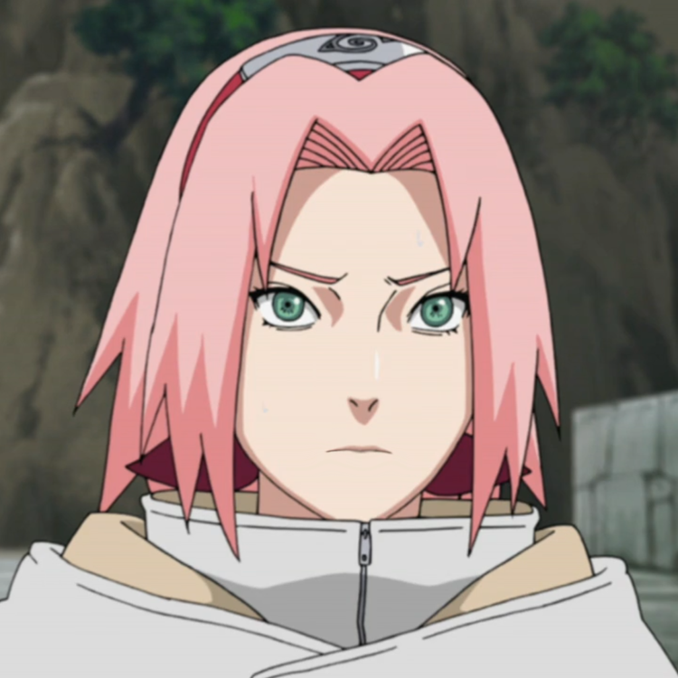

CLAN UCHIHA
SASUKE E ITACHI
ALTRI
Altri membri
Di membri del Clan Uchiha ce ne sono stati tanti e sarebbe quasi impossibile elencarli tutti, in ogni caso in seguito abbiamo i membri che hanno influito più degli altri nel manga e nell'anime :
Baru Uchiha
Fugaku Uchiha
Hibaku Uchiha
Obito Uchiha
Shisui Uchiha
Madara Uchiha
Ozuna Uchiha
Rai Uchiha
Sakura Haruno Uchiha
Sarada Uchiha
(Shin Uchiha)
Sakura Haruno

Sakura Haruno Uchiha è una kunoichi del Villaggio della Foglia. Promossa a Genin, viene assegnata al Team Kakashi assieme a Naruto Uzumaki e Sasuke Uchiha. Quest'ultimo, da grande, la prende come sposa ed è per questo che essa si trova in questo articolo perchè è l'unica Uchiha non di sangue.
Fugaku Uchiha
Fugaku Uchiha era un Jonin del Villaggio della Foglia, il capo del Clan Uchiha ed il capitano della Polizia della Foglia, nonchè padre di Sasuke Uchiha ed Itachi Uchiha.
Baru Uchiha
Baru era tra i suoi pochi membri che erano in grado di risvegliare lo Sharingan in gioventù, così come il suo stesso Sharingan Ipnotico.
Naka Uchiha
Naka Uchiha è un membro del clan tra i più rinomati e potenti che sviluppò lo Sharingan ipnotico, egli è anche un abile utilizzatore di Izanagi, tecnica proibita del clan.